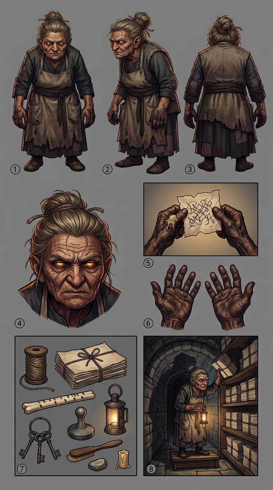

NANDI — model sheet
Chapter 006 · first appearance. The drawing reference for every page this character is on — 5 panels — front · side · back · face · detail (file-dust hands over a torn leaf). Carried over from the first art pass; still to add at the next one: hands, kit, action, in the house panel order, per the character art spec.

🔍 click to zoom
1front2side3back4face5detail (file-dust hands over a torn leaf)
Drawing brief
- Silhouette: small, dense, permanently stooped — a woman shaped by forty years of reaching the bottom shelves. Shorter than Kessa. Never drawn standing straight; when she looks up, the spine stays bent and only the neck moves.
- Eyes: Kshudra cat-eye, catching lamplight as a hard horizontal sliver. This is her identifying feature on panel and her only "magic" — she has no Sight, no thread of her own she uses, no mark.
- Hands: gnarled, thick-knuckled, permanently stained dark at the ridges from file dust and old thread-wax. Her hands are the archive's hands.
- Hair: grey-brown, tied hard back with archive twine — not string, twine, the same stock the quires are bound with.
- Dress: layers of Kshudra working clothes, unbleached, with an apron whose pockets have worn through at the corners from carrying quires. No ornament. No wax. No ink on her, ever.
- Tell: she never picks anything up in a hurry. Nandi's hands move like a person who has spent a lifetime moving things that tear.
Full written sheet, canon rules and card-game line: Nandi